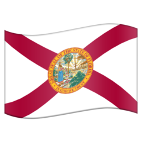
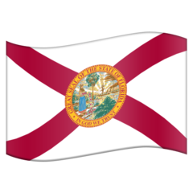
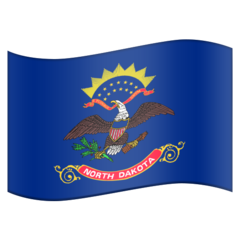
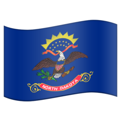

Four Corners
Four Corners
 Mount Frissell
Mount Frissell  Thompson
Thompson

 Chain Bridge Jones Point Light
Chain Bridge Jones Point Light
 Delaware Wedge
Delaware Wedge  Swedesboro
Swedesboro 
 Northfield Williamstown*
Northfield Williamstown*  Markleysburg Harpers Ferry Port Jervis
Markleysburg Harpers Ferry Port Jervis 
  Chattahoochee
Chattahoochee  Nickajack Lake
Nickajack Lake  Pickwick Lake
Pickwick Lake Memphis 15 km
Memphis 15 km 
 Laughlin Mesquite
Laughlin Mesquite  Lake Providence
Lake Providence  Ark-La-Tex
Ark-La-Tex  Southwest City Blytheville Texarkana
Southwest City Blytheville Texarkana  Fort Bidwell
Fort Bidwell 
 Haigler 8 Mile Corner Panorama Point Preston Monument Rock Springs
Haigler 8 Mile Corner Panorama Point Preston Monument Rock Springs 
 Ellicott Rock Mineral Bluff
Ellicott Rock Mineral Bluff
 Yellowstone Orovada Jackpot Snake River Randolph
Yellowstone Orovada Jackpot Snake River Randolph

 Mount Vernon
Mount Vernon 
 Dubuque Cairo
Dubuque Cairo  Shawnee Lookout Fremont Keokuk Dubuque
Shawnee Lookout Fremont Keokuk Dubuque 
 Sioux Falls Victory Hamburg Sioux City Oregon Quapaw Kentucky Bend 3️⃣ South Point Tri-State Peak Wharncliffe  Bois de Sioux Camp Crook Alzada Whitetop 20 km Chaffee Monument Texhomex Ohioville
Sioux Falls Victory Hamburg Sioux City Oregon Quapaw Kentucky Bend 3️⃣ South Point Tri-State Peak Wharncliffe  Bois de Sioux Camp Crook Alzada Whitetop 20 km Chaffee Monument Texhomex Ohioville